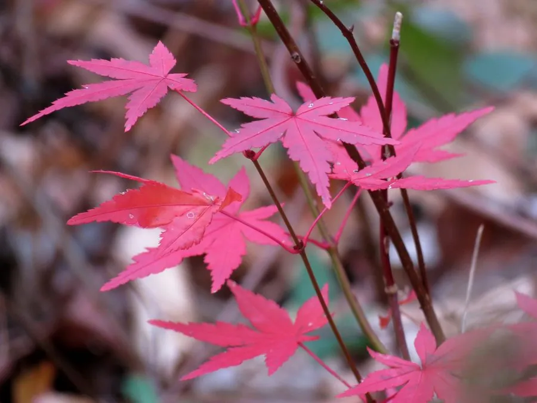

乔木 · 植物界
鸡爪槭 Acer palmatum

叶片掌状分裂、形似鸡爪的落叶小乔木，入秋叶色由黄转红，是东亚庭院、公园与盆景中备受喜爱的经典观赏树种。
- 分类
- 门被子植物门纲木兰纲目无患子目科槭树科属槭属
- 栖息环境
- 海拔 200–1200 米的山坡林缘与溪边，喜温暖湿润和半阴环境
- 地理分布
- 中国长江流域及山东、河南等地，日本、朝鲜半岛也有分布
- 保护级别
- 暂无评估；中国未列入国家重点保护野生植物名录
物种志
鸡爪槭为落叶小乔木或呈灌木状，高可达 8 m，树皮灰褐色；枝条细瘦，小枝紫绿色。叶片掌状 5–9 裂，裂片深达叶片中部以下，边缘具重锯齿，形如鸡爪，故得名；入秋叶色由绿转黄、再变橙红，是公认最艳丽的秋色叶树种之一。伞房花序顶生，紫红色与淡黄色小花杂生，双翅果初为紫红色，成熟后转为黄褐色。
鸡爪槭原产中国长江流域及日本、朝鲜半岛，喜温暖湿润与半阴环境，忌强光暴晒与积水，适宜肥沃、排水良好的微酸性土壤。栽培品种极多，叶色有红、紫、黄、斑叶等变化，红枫、羽毛枫等园艺品种在园林中应用广泛。它也是制作盆景的优良材料，枝叶纤细、姿态潇洒；木材可供细木工用，根皮与枝叶可入药。
形态与习性
- 株高可达 8 m，常用于庭院与盆景
- 花期4–5 月，花紫红与淡黄色
- 果期9–10 月，双翅果熟时黄褐色
- 光照喜半阴，忌强光暴晒
- 水分喜湿润，怕积水
- 土壤微酸性、排水良好的肥沃壤土
- 叶色变化9–11 月由绿转黄、橙红
- 主要用途庭院观赏、盆景制作
趣味知识
- 鸡爪槭的叶片裂得很深，形似鸡爪，这也是它名字的由来。
- 入秋后鸡爪槭叶片的花青素含量升高，叶色由黄转橙红，是秋景观赏的主角。
- 鸡爪槭的翅果成对生长，像一对展开的小翅膀，成熟后旋转下落。
- 日本京都的寺院庭园常以鸡爪槭造景，秋季红叶与青苔、石组相映成趣。